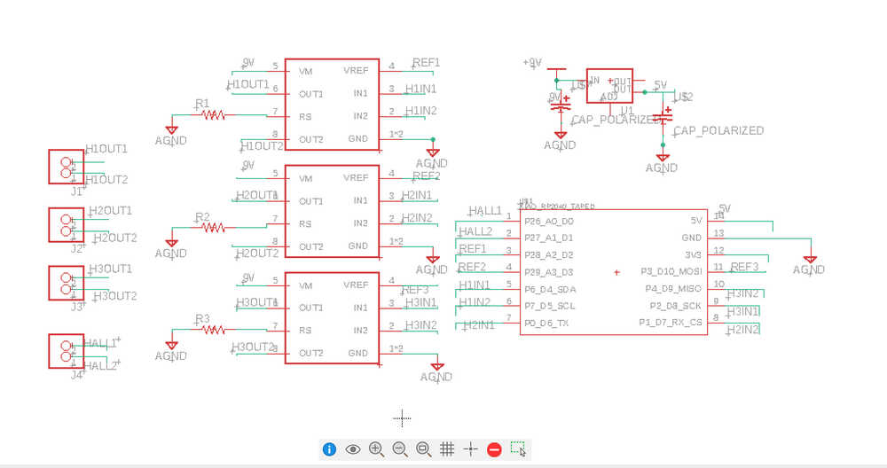
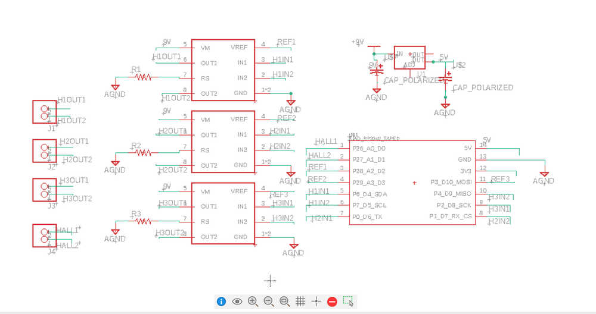
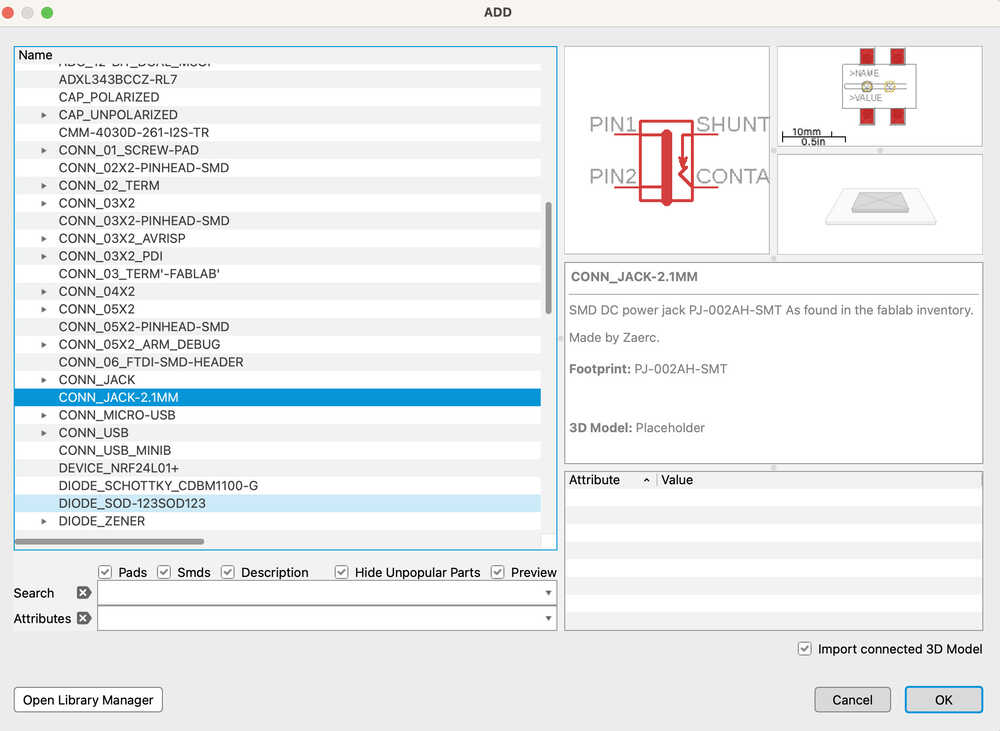
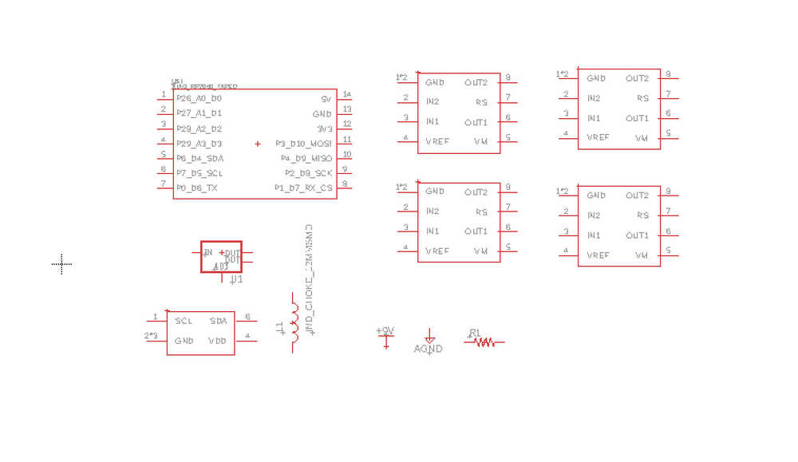
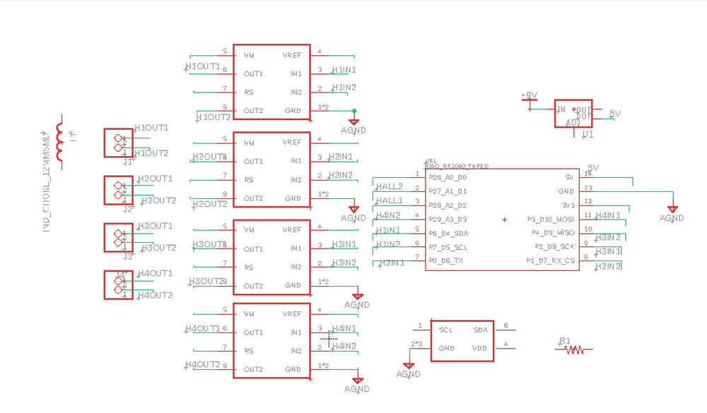
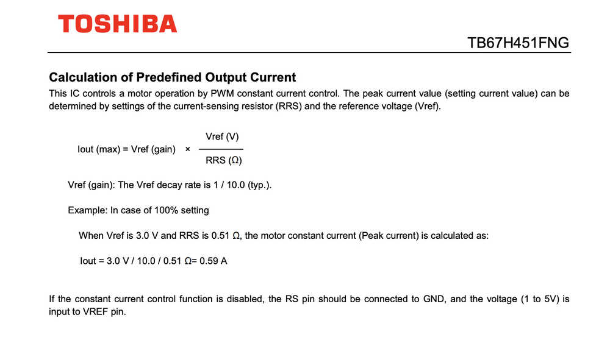
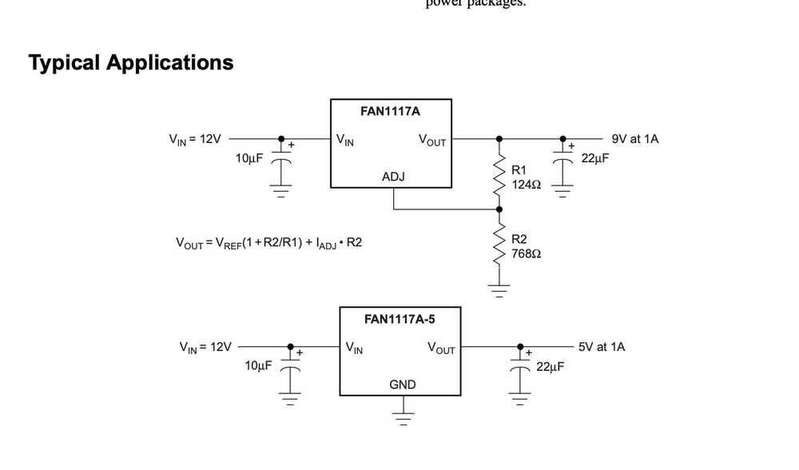
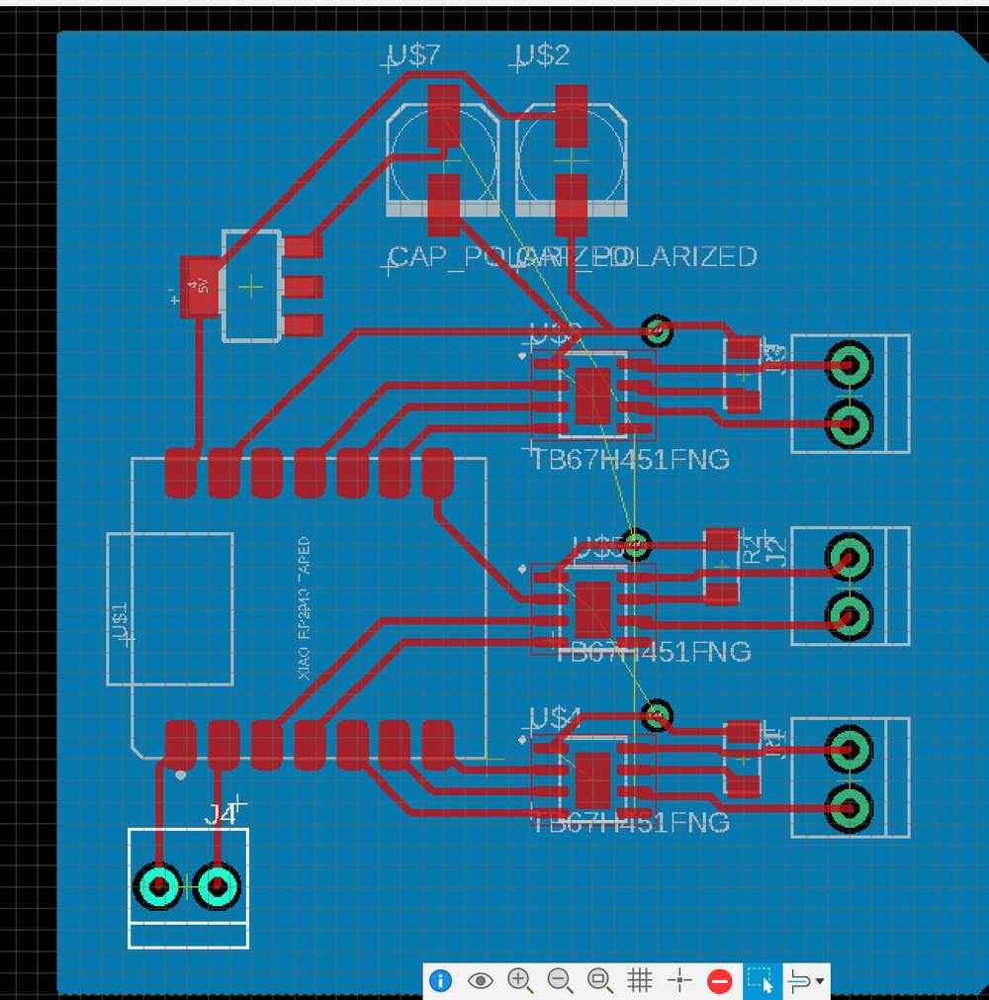

Week 5 documentation
Overview
For this week, my plan is to learn about what circuits I need to use my electromagnets, led, Hall effect sensor and to control them appropriately.- Designing/learning what circuits and components to use
- Setting up/Learning the basics of ECAD/EDA electronic CAD or Electronic Design Automation
- Designing the board.
Circuit Design
So this obviously is not something to tackle in a week. I've thought about what kinds of circuits I would need and have decent exposure to working with circuits and learning about different ideas through various classes, but I am not at all confident in actually designing or applying things in practice.I started by thinking about what I wanted to accomplish. The main thing is that I want to drive some electromagnets, ideally at varying current, independently, and be able to drive them in reverse. From the tests I conducted during the embedded programming week, I knew that I needed higher voltage than 3.3 since the field produced with no added resistance was not strong enough.
I thought of controling a MOSFET with the board's output voltage and connecting the electormagnet to a 9V battery and then though about adding a potential h-bridge using mosfets for flipping the voltage, and maybe a pull down resistor and inductor to deal with voltage spikes. I was a bit concerned about how this would scale putting a bunch of these circuits together, but after talking to Alfonso, I realize I could just do everything with an h-bridge, and Quentin directed me to a reliable, compact h-bridge that can even control the current output! which was everything I needed.
The list of components: (inital estimate)
- 4 electromagnets
- 4 h-bridges
- 1-2 hall effect sensors
- 4 pulldown resistors
- 9v-12v supply
- 5v regulator
- xiao rp2040
Getting started
There are a couple of softwares that are emphasized for this week:- Kicad
- Eagle
- SVG-PCB
Im gonna start with Fusion's Eagle since I'm looking forward to the integrations, but kicad will definitely be useful in the future once I leave mit since its free. First step is to import the fab library by follwing the instructions on the recitation page. Once I have the library, I need to place the xiao rp2040 since that is what I will be augmenting with this pcb.
Useful command line prompts: "grid on", "add", "net", "route", "name", "copy", "value", "move" (and move group), "drc" (design rule check), "ripup", "polygon", "ratsnest"(not sure what this does), "display"(-tvalues, -tnames),"show" (+3v3, name the signal)
If there is no document for the linked pcb view, click on Switch in the top left to create one.
To move a component in pcb view, click and drag on the green cross of a component.
"grid on mm 0.5" for metric instead of thous.
Hold control to snap to grid when moving components.
When moving components, right click to rotate.
Use middle mouse button for "via", adds hole to traverse to bottom layer. (make sure to add polygon on bottom layer)
Use 0 value resistances for bridging
trace width calculator with parameters: temperature rise, amps, length, thickness (1 oz/ft^2)
right click on a polygon -> properties -> uncheck thermals to get rid of thermal breaks.
Board shape: go on dimension layer and use "line" command, set width to 0 and outline board. Then delete surround shape.
Putting things in place
The biggest issue right now is figuring out which component to use. Since I don't trust whatever I can come up with by looking at the internet, I'll just have to pick one of the options and get it verified later. I got a specific h-bridge model from Quentin but I'm picking a generic regualtor, power supply, while leaning towards things in the fab library.
I am a bit overwhelmed on which connector to add. Since this isn't going to add the component to the pcb directly, if it has roughly the same pins then it shouldn't matter except for the model.
It looks like "terminal block" is for screw terminals, pinhead is for pins that stick out, AVRISP and ARM_DEBUG don't seem relevant, and there are some for USB, jacks, and whatever FTDI is. Probably related to some protocalls. For now I'm probably good with using pinhead or terminal. Since i want to test out different electormangets, I'll use a 2 terminal connector for each h-bridge output.
There aren't any electromagnets, so I'll just use an inductor model for now. Actually, maybe it would be more straightforward to just have generic connectors to interface with the coil and reduce clutter on the board, since I already modeled the coil and it won't be on the board anyway. I don't know what's good practice, so I'll just have everything for now.

Connecting schematic lines
Connecting all the ground lines and the xiao to h-bridge to connectors was straightforward, but the other componenents raised some questions.
Connecting the H-bridges to the rp2040, I realize that I'm not sure if all the pins can PWM or if its just the analog pins. Since the h-bridges take so many pins from the xiao I need to make sure I save the ones compatible with special protocals; I'm not sure if the hall effect sensor I chose needs those or if I can use ones with just analog output voltage. Dont know what the two output pins of the regulator are for or what "adj" means. For the h-bridge I dont remember the specifics to control the current and what "rs" stands for.

After doing some digging in the datasheets, I learned more about the TB67H451FNG (h-bridge) and the regulator. It looks like VM refers to the motor power supply, Rs is the current sensing resistor, and vref is used in the calculation for the current. Specifically, Iout = vref(gain)*vref/rs, with vref(gain) = 1/10 generally.

For the regulator, it looks like the output pins might just be redundant and the adj is for adjusting the output using some kind of divider. Looking at the datasheet example use it looks like it can convert 12v to 5v if the adj is ignored so I hope that should work for 9v as well. While there are other regulators with just ground, in, and out, there are no references to them so I don't know what they do. It looks like two capacitors are being used as well, so maybe thats a good idea.
Now for the wiring.
pcb wiring
First step is to put everything on the outlined board and rotate them to roughly minimize crossovers. Once that's done, I need to edit the drc (design rule check) so that I can keep track of whats left and so that things are the right dimension. I get these values by refering to Jake's Eagle tutorial and hoping things are still the same. Now I use the quick route for things that are straightforward, alternating between delete, move, and occasionally switching things in the schematic to make things nicer.
Following Jake's tutorial, I connect all the grounds to a ground plate repersented by a polygon on the bottom layer using via's (middle mouse button while routing) Some things I had to add at the end: It looks like the h-bridges also need to have the center grounded I dont know where the 9v supply will go, maybe just sodered on somewhere on a 9V trace add the board shape using the board tool, leaving the usb port to hang over a bit
And I think im done! I will definitely have to check that my all my assumptions are ok and to fix any bad routing but that's it for this week. Future stuff: - look into multiplexing, maybe if I only need to control one coil at a time i can control everything with the inputs for one h-bridge + a control voltage.